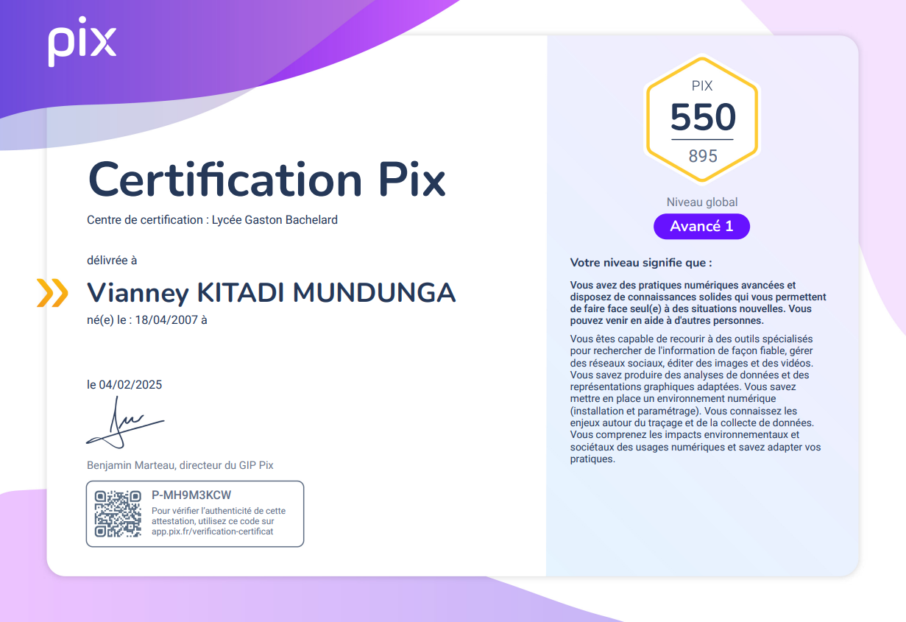

Qui suis-je?
A propos de moi

Je suis un étudiant en 1ère année de BUT INFORMATIQUE à l'Université Gustave Eiffel passionné par les jeux vidéo, le dessin, la musique, l'écriture ainsi que les différents domaines de l'informatique et plus précisément par le Software Engineering.
En dehors des cours, je suis un Développeur débutant de Jeu Vidéo Indépendant et Compositeur.
J'aspire à me perfectionner dans l'informatique. J'apprends aussi d'autres langages grâce à LeetCode et Exercism, et je me forme actuellement pour passer des certifications Cisco.
Formation
-
2022 - 2025 | Lycée polyvalent Général et Technologique GASTON BACHELARD (Chelles)
Première STi2D (Sciences et Technologies de l'Industrie et du Développement Durable)
Terminale STi2D Spécificité SIN (Systèmes d'Information et Numérique) -
2025 - Présent | Université Gustave Eiffel - IUT de Marne la Vallée (Champs sur Marne)
BUT Informatique (1ère année en cours)
Certifications
-
Certification Pix - Compétences Numériques

Compétences
Soft Skills
- Empathie; Patience; Bonne écoute; Détermination
- Anglais Niveau C1
- Espagnol Niveau B1+
- Japonais Débutant (Apprentissage au Collège + Autodidacte)
Hard Skills
- HTML5 & CSS
- JS (Débutant)
- Python
- Arduino (C)
- bash
- GML (Basé sur C++)
- C++ (Débutant)
- PHP
- MySQL & MongoDB
Loisirs, Intérêts & Projets
J'aime, dans mon temps libre, composer des musiques (FL Studio) et ce depuis mes 10 ans. Il s'agit d'un passe-temps mais également d'un rôle crucial dans l'un de mes projets étant donné que je joue un rôle de Compositeur de Bande Son pour ce dernier.
Je suis également passionné par le dessin (Traditionnel & Digital) depuis tout petit. Je souhaite réellement m'améliorer dans ce domaine afin de pouvoir apprendre l'animation 2D, cela jouerait également un rôle majeur dans l'un de mes projets.
Projet: AKUMU

AKUMU est un Jeu Vidéo Indépendant JRPG sur lequel je travaille seul. Ma source d'inspiration étant Toby Fox (Créateur du jeu mondialement connu : Undertale), je souhaite, dans le meilleur des cas, aboutir ce projet en tant que Solo Developper, Compositeur, Ecrivain et Graphiste 2D.
Pour le moment, il n'y a pas de date de sortie de prévue en raison de mes études auxquelles je souhaite dédier la majority de mon temps mais il est bel et bien prévu de mettre ce jeu en ligne sur la plateforme STEAM et donc disponible sur Windows.
PROJECT SAE : Wall is You
Wall is You : Wall is You est un jeu rogue-like inspiré de Baba is You, entièrement développé en équipe avec Python et la bibliothèque FLTK.
Projet : Portfolio Web
Développement de ce portfolio responsive mettant en avant mes compétences et projets.